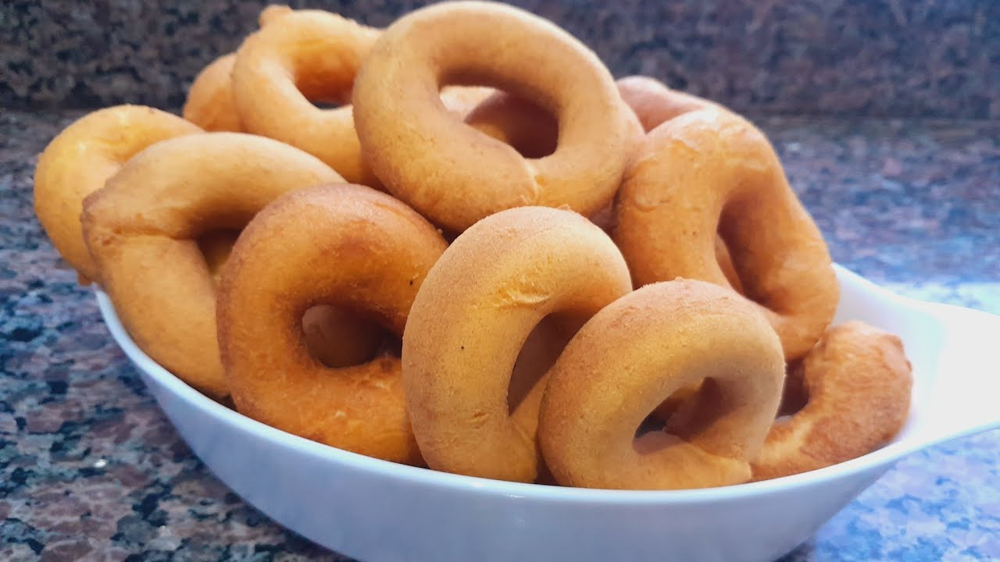
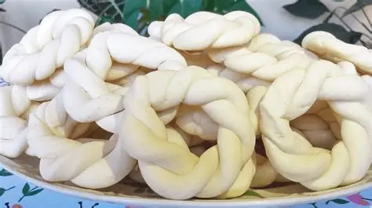
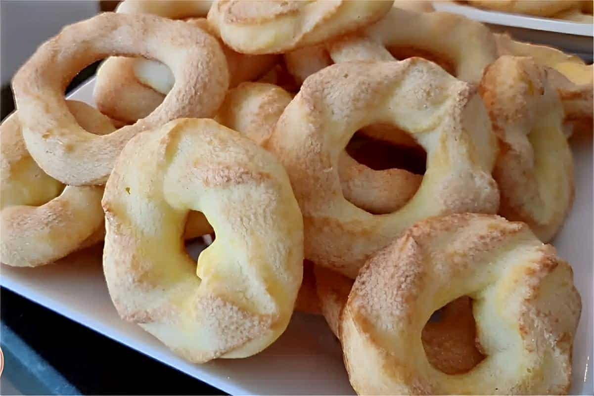

Rosquinhas de polvilho doce



⊹₊˚‧︵‿₊୨ᰔ୧₊‿︵‧˚₊⊹
60 minutinhos
Ingredientes (para 12 unidades):
- 1 colher de chá de fermento químico em pó (fermento para bolo);
- 2 colheres de sopa de parmesão ralado;
- 1 xícara de chá de farinha de trigo;
- 1 xícara de chá de polvilho doce;
- 3 colheres de sopa de óleo;
- 1/2 xícara de chá de açúcar;
- Açúcar cristal para polvilhar;
- Canela para polvilhar;
- 1 ovo;
- 3 colheres de sopa de manteiga sem sal.
Modo de preparo:
- Reúna os ingredientes das rosquinhas de polvilho doce;
- Em uma tigela, misture todos os ingredientes, exceto o açúcar e a canela;
- Mexa bem até a massa ficar parecida com uma farofa;
- Modele as rosquinhas no formato clássico;
- Em um prato, misture o açúcar e a canela;
- Passe as rosquinhas na mistura;
- Coloque as rosquinhas em uma forma untada e asse em forno preaquecido a 180ºC por cerca de 15 minutos;
- Sirva no café da tarde com café ou chá. Bom apetite!